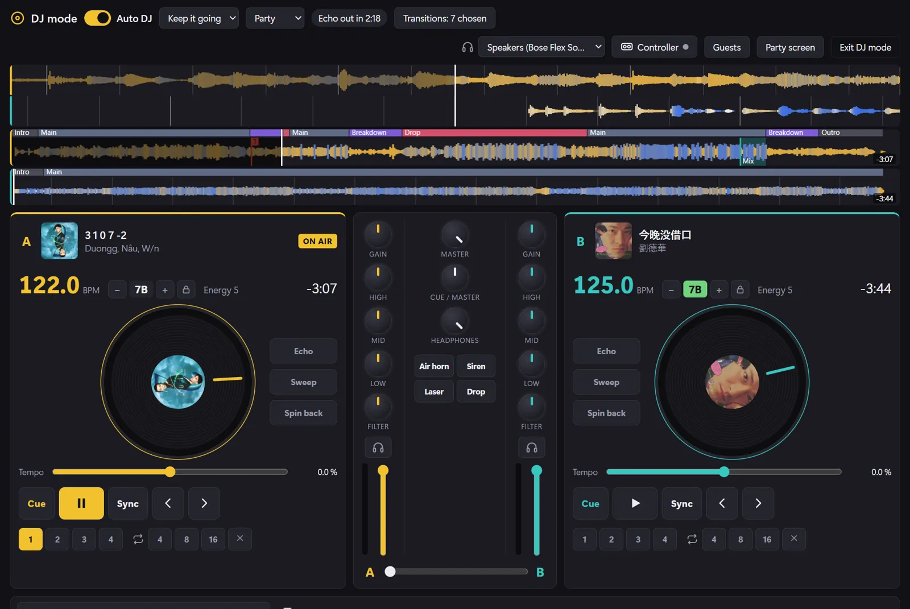
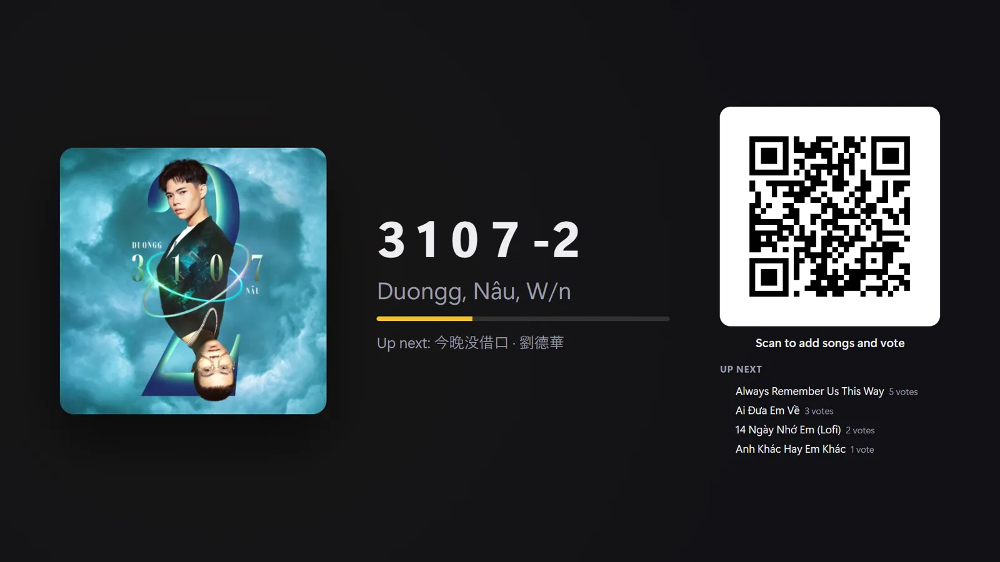
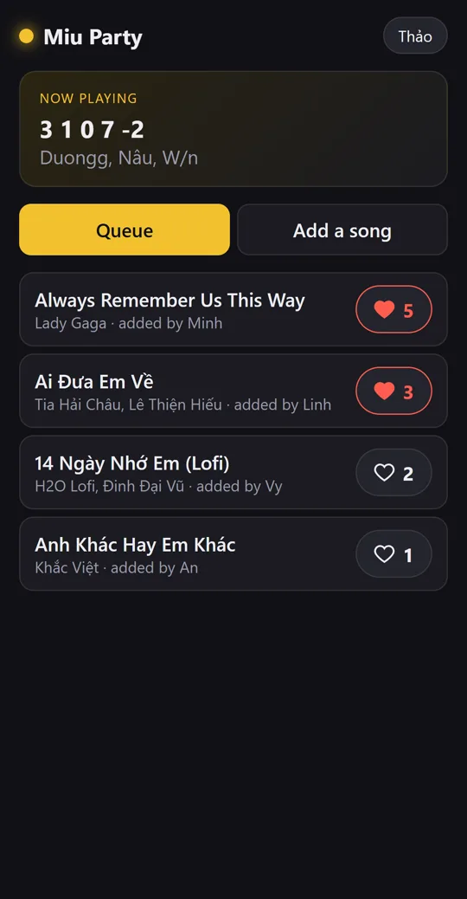
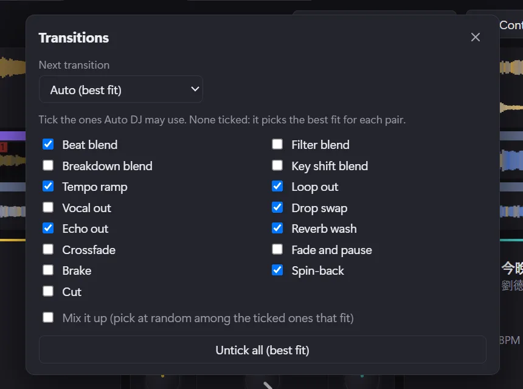
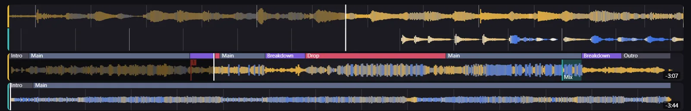

NEW DJ mode and a party queue your friends control
Be the DJ. Or let Miu do it and go dance.
Miu mixes your songs like a real DJ: beats lined up, smooth handovers, zero skills needed. Your friends scan a QR code, throw in their songs, vote for the bangers and even queue up YouTube karaoke. You? Go grab a drink.
Free forever · No account · Windows 10 and 11 · English and Tiếng Việt



DJ mode
A DJ booth that actually knows what it's doing.
Flip on Auto DJ and Miu runs the night. It listens to every song first (the tempo, the key, where the drop hits, where the singing is) and picks a next track that actually fits. Want to touch the decks? Go for it, they're yours.
15 ways to switch songs, picked by the vibe
Beat blends, drop swaps, echo outs, reverb washes, even a cheeky spin-back. Slow songs get a gentle fade, bangers get the big moves. Tick the ones you love, or let Miu mix it up.

Hands on, whenever
Two decks, EQ, filters, echo, loops, hot cues and sound pads (yes, there's an air horn). Plug in a DJ controller and it just works, or teach Miu any knob with MIDI learn.
See the music, not just a squiggle
Waveforms coloured by what you hear: blue for the kick and bass, warm for voices and synths, white for the hi-hats. The intro, the build, the drop and the breakdown are labelled, and you can see exactly where the next mix lands.

Party mode
Everyone's the DJ. Nobody fights over the aux.
Put the party screen on the TV. Friends scan, add, vote. The crowd's favourites play first and Auto DJ mixes them in like they were always the plan.
TV on, QR up
The party screen opens in its own window. Drag it to the TV, go full screen, and keep the decks on your laptop.
Scan, add, done
No app, no sign-up. Pick from your songs or paste a YouTube, Spotify or Apple Music link.
Hearts decide
Most votes jump to the top. When the queue runs dry, Auto DJ keeps the music going with picks that fit.
Karaoke night? Say less.
Paste any YouTube karaoke video and it plays right on the big screen in YouTube's own player, with the QR code still in the corner. Nothing gets downloaded. When the song ends, the music picks back up by itself.
Weddings, birthdays, Tết. Let the guests build the playlist while you actually enjoy your own party. You're still the boss: approve songs first if you like, remove anything, and set how many songs each guest can queue.
On your Wi-Fi, or from anywhere
Guests on your Wi-Fi connect straight to your PC. Friends on mobile data? Flip on the party link and they join through musicplayer.vietnamcos.com. Every party gets its own random link, and it's gone the moment you switch it off.
And the everyday player
Tiny. Fast. Sounds unreal.
When the party's over, Miu is just a really good music player that barely touches your RAM.
Bit-perfect sound
Its own audio engine with WASAPI exclusive mode. FLAC, ALAC and hi-res play exactly as recorded. Audiophiles, you're welcome.
Like it, it's on your iPhone
Thumbs up while you listen and the song lands in your iPhone's own Music app (or a USB music player). No iTunes drama.
Lyrics that sing along
The line being sung lights up as the song plays. Tap any line to jump there. Lyrics come from your files or free from LRCLIB.
Two speakers, perfectly in sync
Play through two Bluetooth speakers at once, even different brands. Miu listens through a mic and lines them up for you.
Control it from anywhere
Lock screen, media keys, headphone buttons and shortcuts that work even when another app is in front.
Made for Vietnamese music
Broken accents in old files get fixed. Search "diem xua" and find Diễm Xưa. Proper Vietnamese sorting, full Tiếng Việt UI.
10-band EQ
Presets or your own curve, with a guard so nothing clips. Your iPhone still gets the original files.
Podcasts, offline
Top charts, search, downloads for the commute, and it remembers where you stopped.
Mini player
A tiny always-on-top player with a visualizer, for when you're working and vibing at the same time.
iPhone
One button. Your faves, in the Music app.
Miu talks to Apple's own software, so songs arrive the proper way: titles, artists and covers, right in the built-in Music app.
Like what you hear
Add your music folders and tap thumbs up on the songs you want in your pocket.
Plug in
Miu shows your phone, its free space and exactly what's about to change.
Hit Sync
New faves go on, songs you unliked come off, everything else stays put.
Your songs are safe. Before every sync Miu backs up the phone's music library and keeps a copy of anything that only lives on the phone. Afterwards it double-checks nothing went missing.
FAQ
You asked.
Is it really free?
Yep. No account, no ads, no subscription.
I've never DJ'd. Can I still use DJ mode?
That's the whole point. Turn on Auto DJ and it does the mixing. Touch the decks only if you feel like it.
Do my friends need to install anything?
Nope. They scan the QR code and the queue opens in their phone's browser.
Does YouTube karaoke download the videos?
No. Videos play in YouTube's own embedded player, straight from YouTube. Nothing is saved on your PC.
What if nobody adds songs?
Auto DJ keeps going with songs from your library that fit what's playing. The music never just stops.
Can someone hijack the queue?
You can turn on approval, remove any song, limit how many songs each guest has waiting, or close the queue. Each party link is random and dies when you switch it off.
What do I need for iPhone sync?
Windows 10 or 11 with iTunes installed, a cable, and "Manually manage music and videos" turned on in iTunes. Miu walks you through it the first time.
Will it delete songs I added with 3uTools or iTunes?
Never. Miu only removes songs it put there itself.
Windows says the download is unrecognised.
The installer isn't code-signed yet, so SmartScreen may complain. Hit "More info", then "Run anyway".
How do I get updates?
Miu checks once a day and shows a little card when there's something new. One click and it updates itself.
Your next party just got easier.
Download Miu, plug in the speakers, put the QR on the TV. That's it.
Free · Windows 10 and 11